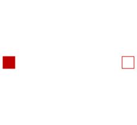

| Name |
Description |
 HeatPort HeatPort |
Thermal port for 1-dim. heat transfer |
| HeatPort_a |
Thermal port for 1-dim. heat transfer (filled rectangular
icon) |
| HeatPort_b |
Thermal port for 1-dim. heat transfer (unfilled rectangular
icon) |
|  Element1D |
Partial heat transfer element with two HeatPort connectors that
does not store energy |
 PartialElementaryConditionalHeatPort PartialElementaryConditionalHeatPort |
Partial model to include a conditional HeatPort in order to
dissipate losses, used for textual modeling, i.e., for elementary
models |
|
PartialElementaryConditionalHeatPortWithoutT |
Partial model to include a conditional HeatPort in order to
dissipate losses, used for textual modeling, i.e., for elementary
models |
|
PartialConditionalHeatPort |
Partial model to include a conditional HeatPort in order to
dissipate losses, used for graphical modeling, i.e., for building
models by drag-and-drop |